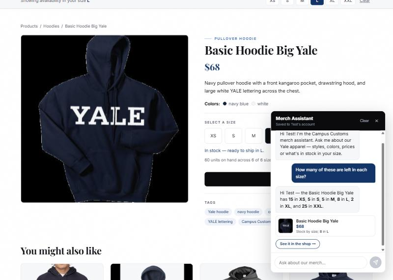
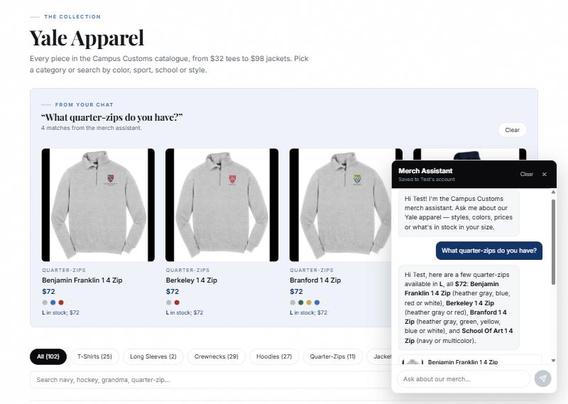
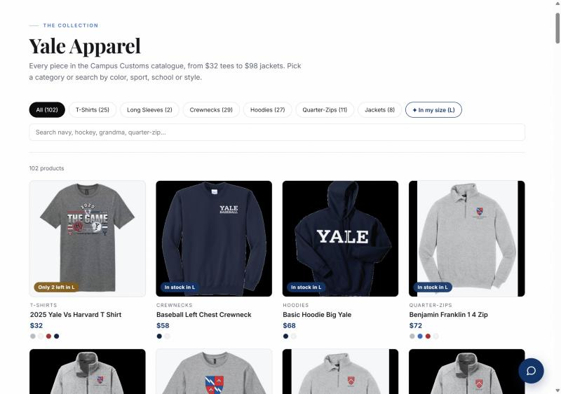
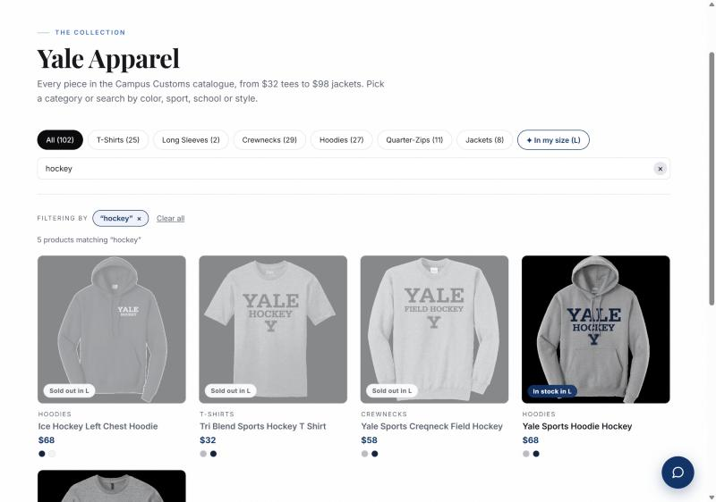
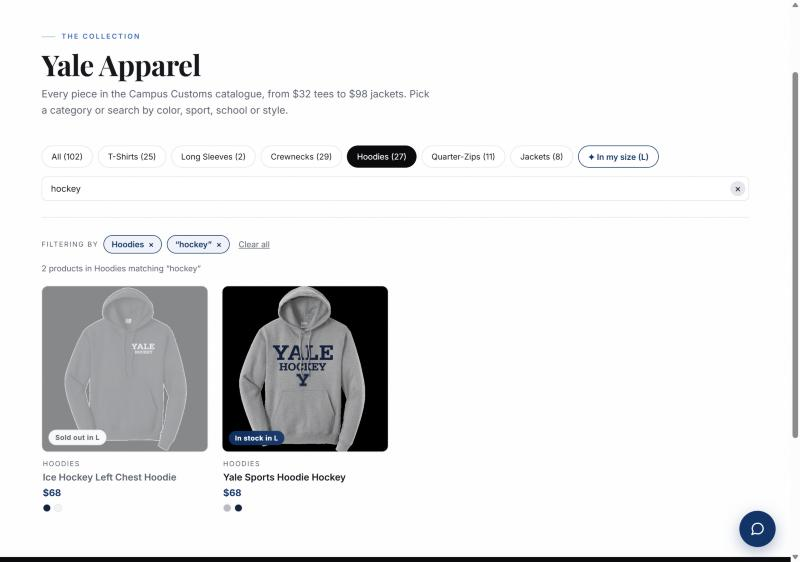
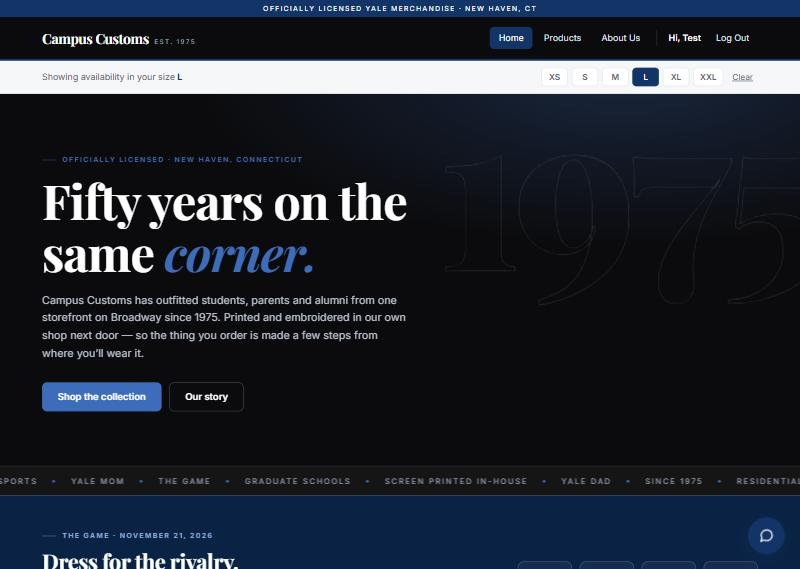

Three features exercised against the running application — React + Vite front end on
localhost:5173,
FastAPI back end on
localhost:8000.
Every screenshot below was taken from the live site during this run, and every number shown
is checked against the SQLite database.
What was tested: standing on the Basic Hoodie Big Yale product page, the shopper
asks the assistant “How many of these are left in each size?” — without naming
the product. The reply must come from the inventory table, not from the model.

check_stock tool and read
real per-size quantities out of the database — it resolved the vague word
“these” to the product on screen using page context, and it greeted the signed-in
shopper by name without being told who they were.
The same query, run directly against data/campus_customs.db:
sqlite> SELECT size, quantity FROM inventory
WHERE product_id = 'basic-hoodie-big-yale';
| Size | Database | Assistant said | Result |
|---|---|---|---|
| XS | 15 | 15 | match |
| S | 5 | 5 | match |
| M | 5 | 5 | match |
| L | 8 | 8 | match |
| XL | 2 | 2 | match |
| XXL | 25 | 25 | match |
Six of six exact. Raw output saved at
app_check_images/01b-db-proof.txt.
What was tested: the shopper asks “What quarter-zips do you have?”. The agent must search the catalogue and return structured matches that the website renders as product cards — not just a list of names in prose.

products array
(not just text), and the front end rendered it with the same ProductCard
component the catalogue grid uses — identical photo, price, color swatches and click-through to
the product page. Each card also carries a match note explaining why it matched
(“L in stock; $72”), which reflects the shopper's saved size.
| Item | Observed |
|---|---|
| Question asked | “What quarter-zips do you have?” |
| Cards in the chat panel | 4 — Benjamin Franklin, Berkeley, Branford, School Of Art 1/4 Zip |
| Cards on the Products page | 4, in the “From your chat” band |
| Price shown | $72 each — matches catalogue.price for all quarter-zips |
| Full catalogue below | Still intact: All (102), Quarter-Zips (11), filters working |
| Click-through | Each card opens its own product page |
Server-side safeguard: every product_id the model returns is looked up again in
the catalogue, and the name, price, image and colors on the card come from the database rather
than from the model — so an invented product cannot reach the screen.
Feature: live debounced search with a visible, individually removable filter bar. The problem it fixed: search previously did nothing until the shopper pressed Enter, so typing a term and watching nothing happen made the search look broken. Active filters were also invisible, leaving no explanation for why the grid had shrunk.


?search=hockey.

?category=Hoodies and 27 products — the category filter survives.
| Step | Count | URL |
|---|---|---|
| Start | 102 products | /products |
| Typed “hockey” (no Enter) | 5 products | ?search=hockey |
| Added Hoodies chip | 2 products | ?search=hockey&category=Hoodies |
| Removed only the search pill | 27 products | ?category=Hoodies |

| Bug | Cause | Fix |
|---|---|---|
The chat panel had stopped floating in the corner — it was rendering at
x: -24, y: 1512, far outside the viewport. |
A rule added during the Problem 10 redesign set
position: relative on .chat-panel to lift it above the paper
grain, which overrode its position: fixed. |
Removed the panel and launcher from that rule — they only needed the
z-index. Confirmed back at the bottom-right corner. |
Product card notes displayed raw markdown, e.g.
**8** in **L**. |
Bold was rendered inside chat bubbles but not on card notes or the Products page match notes. | Extracted the inline renderer to src/markdown.tsx and used it in all three
places. Notes now read “8 in L” with the number in bold. |
Both fixes are reflected in the screenshots above. The first bug is the reason Screenshot 1 was retaken — the chat panel was not visible in the first attempt.